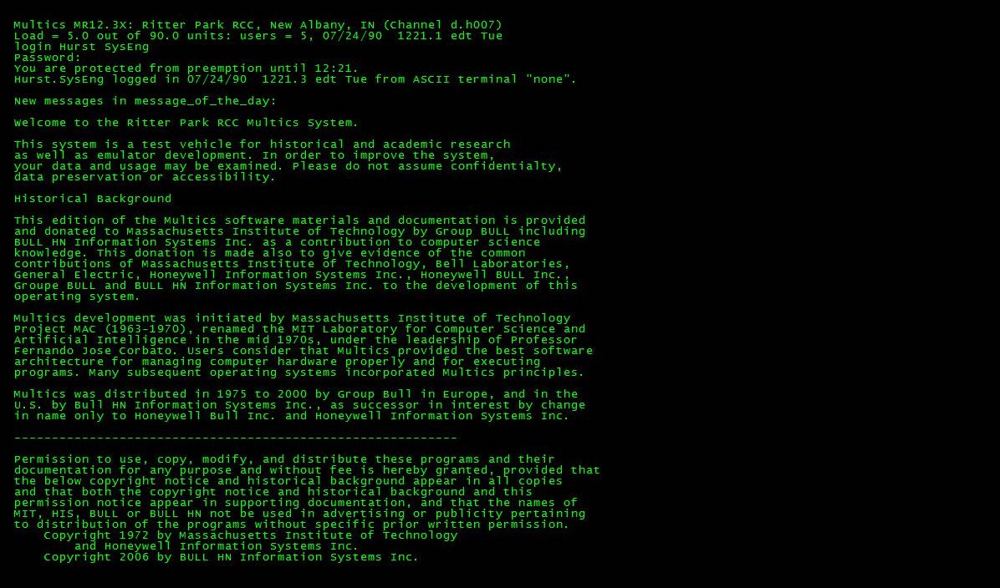
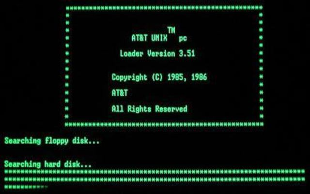
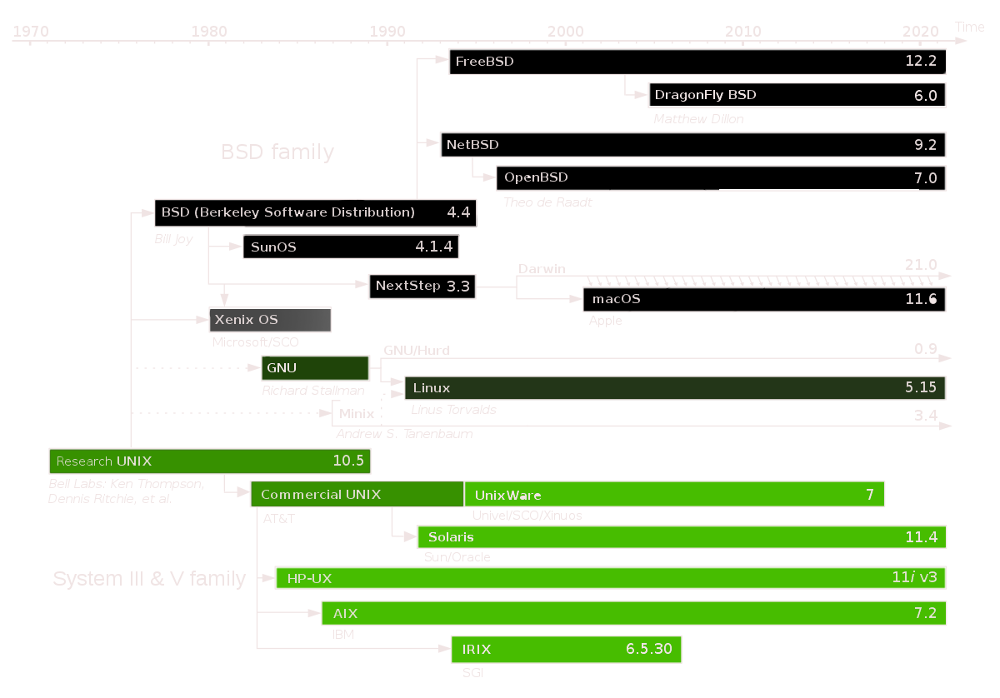

HISTORY OF UNIX
The historical backdrop of Unix traces all the way back to the mid-1960s. at the point when the Massachusetts Institute of Technology, AT&T Bell Labs, and General Electric were mutually fostering an exploratory time-sharing working framework called Multics for the GE-645 mainframe.Multics presented numerous developments, yet additionally had numerous issues. Chime Labs, disappointed by the size and intricacy of Multics however not its points, gradually pulled out of the undertaking. Their last scientists to leave Multics - among them Ken Thompson, Dennis Ritchie, Doug McIlroy, and Joe Ossanna - chose to re-try the work, however on a much more modest scale.
In 1979, Ritchie portrayed the gathering's vision for Unix: What we needed to safeguard was not only a decent climate in which to do programming, however a framework around which a partnership could shape. We knew as a matter of fact that the embodiment of common registering, as provided by remote-access, time-shared machines, isn't simply to type programs into a terminal rather than a keypunch, yet to energize close correspondence.
In the last part of the 1960s, Bell Labs was associated with an undertaking with MIT and General Electric to foster a period sharing framework, called Multiplexed Information and Computing Service (Multics), permitting numerous clients to at the same time get to a centralized computer. Disappointed with the undertaking's advancement, Bell Labs the board eventually pulled out.
Thompson had executed a self-facilitating working framework with a constructing agent, manager, and shell, utilizing a GECOS machine for bootstrapping. Douglas McIlroy then, at that point, ported the TMG compiler-compiler to PDP-7 gathering, making the primary undeniable level language running on Unix. Thompson utilized this device to foster the principal form of his B programming language.
1990s Unix workstations of the 1990s, including those made by DEC, HP, SGI, and Sun The Common Desktop Environment (CDE) was generally utilized on Unix workstations. The Unix wars went on into the 1990s however ended up being to a lesser degree a danger than initially suspected: AT&T and Sun headed out in a different direction after System V.4, while OSF/1's timetable slipped behind.[29] By 1993, most business sellers changed their variations of Unix to be founded on System V with numerous BSD highlights added. The formation of the Common Open Software Environment (COSE) drive that year, by the key part in Unix, denoted the finish of the most infamous period of the Unix wars and was trailed by the consolidation of UI and OSF in 1994. The new joined substance held the OSF name and halted work on OSF/1. At that point the main seller utilizing it was Digital Equipment Corporation, which proceeded with its own turn of events, rebranding its item Digital UNIX in mid 1995. POSIX turned into the binding together norm for Unix frameworks (and a few other working frameworks).
2000s In 2000, SCO offered its whole UNIX business and resources for Caldera Systems, which later changed its name to The SCO Group.